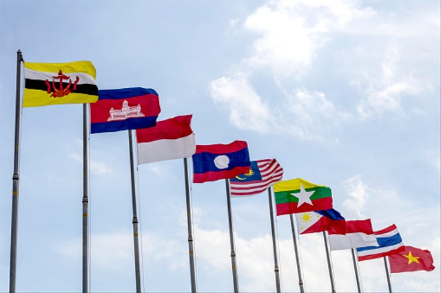
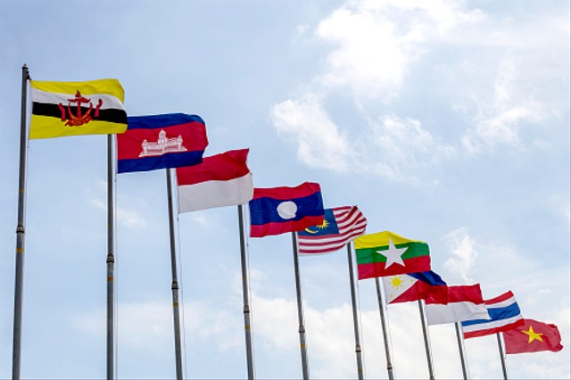
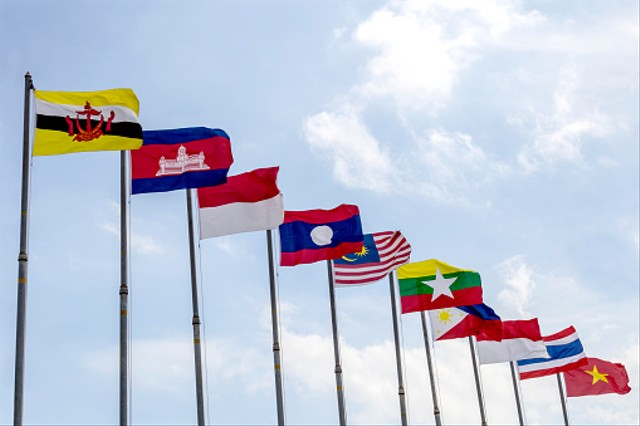

Kerjasama regional adalah kerjasama antara negara-negara di kawasan yang melibatkan lebih dari 2 (dua) Negara. Kerjasama Sub Regional merupakan kerjasama yang mendukung percepatan pertumbuhan ekonomi di kawasan Regional. Kerjasama antar negara ini dilakukan oleh negara-negara yang berada di suatu kawasan tertentu yang biasanya berdekatan. Tujuan kerja sama regional biasanya sesuai kepentingan masing-masing negara. Namun secara umum untuk memajukan negara-negara yang berada di suatu kawasan atau wilayah.

Ciri-Ciri Kerja Sama Regional
Melibatkan Negara-Negara di Kawasan yang Sama:
Partisipan dalam kerja sama regional biasanya terdiri dari negara-negara yang memiliki kedekatan geografis, seperti negara-negara Asia Tenggara, Eropa, atau Afrika.
Fokus pada Kepentingan Bersama:
Kerja sama ini bertujuan untuk mencapai kepentingan bersama, misalnya meningkatkan stabilitas ekonomi, keamanan, atau mengatasi tantangan lingkungan yang dihadapi kawasan tersebut.
Pembentukan Organisasi atau Forum Regional:
Biasanya negara-negara yang terlibat akan membentuk organisasi atau forum regional untuk mengelola kerja sama, seperti ASEAN, Uni Eropa (EU), dan MERCOSUR.
Mengatasi Tantangan Regional:
Kerja sama ini sering berfokus pada isu-isu spesifik yang mempengaruhi kawasan tersebut, seperti perdagangan bebas, keamanan maritim, atau penanganan bencana alam.
Contoh Kerja Sama Regional
ASEAN (Association of Southeast Asian Nations):
Merupakan organisasi regional yang terdiri dari negara-negara Asia Tenggara, termasuk Indonesia, Malaysia, Singapura, Thailand, dan Filipina. Tujuan ASEAN adalah mempromosikan perdamaian, stabilitas, dan pembangunan ekonomi di kawasan Asia Tenggara.
Uni Eropa (European Union):
Adalah contoh kerja sama regional yang sangat kuat di Eropa, dengan fokus pada integrasi ekonomi, politik, dan sosial antara negara-negara anggotanya.
NAFTA/USMCA (North American Free Trade Agreement/United States-Mexico-Canada Agreement):
Ini adalah perjanjian perdagangan bebas antara Amerika Serikat, Meksiko, dan Kanada untuk mempromosikan perdagangan dan investasi di kawasan Amerika Utara.
APEC (Asia-Pacific Economic Cooperation):
Forum kerja sama ekonomi di kawasan Asia-Pasifik yang terdiri dari negara-negara seperti Indonesia, Jepang, Amerika Serikat, Australia, dan Kanada, dengan fokus pada liberalisasi perdagangan dan investasi.
liMERCOSUR (Mercado Común del Sur):
Organisasi regional yang mencakup beberapa negara Amerika Selatan seperti Argentina, Brasil, Paraguay, dan Uruguay, bertujuan untuk meningkatkan perdagangan bebas di antara anggotanya.
Manfaat Kerja Sama Regional
Meningkatkan Stabilitas dan Perdamaian:
Dengan adanya dialog dan kerja sama antar negara, konflik potensial dapat diminimalisasi, dan stabilitas kawasan dapat terjaga.
Meningkatkan Pertumbuhan Ekonomi:
Perjanjian perdagangan bebas dan integrasi ekonomi regional dapat memperluas akses pasar, meningkatkan perdagangan, dan investasi antar negara anggota.
Meningkatkan Daya Saing Global:
Melalui kerja sama regional, negara-negara dapat memperkuat posisi mereka dalam perdagangan global dan menghadapi persaingan internasional dengan lebih baik.
Penguatan Kerjasama Sosial dan Budaya:
Negara-negara yang tergabung dalam kerjasama regional sering kali memperkuat hubungan sosial dan budaya, misalnya melalui pertukaran pelajar, promosi pariwisata, dan kerja sama dalam seni dan budaya.
 
